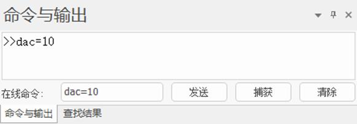
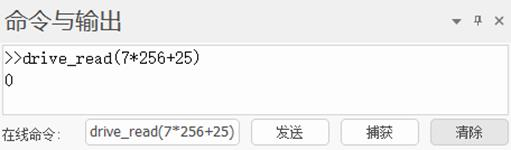
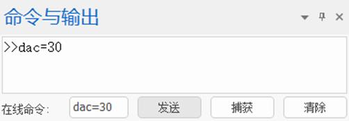

|
类型 |
轴参数 | |||||||||||||||||||||||||||||||||||||||||||||
|
描述 |
伺服轴DA直接控制，速度或力矩模式下支持。
单位为DA模块的刻度，12位或16位。 速度控制时要看驱动器具体单位。 力矩控制时单位为千分之一，等于1000时表示100%力矩。 | |||||||||||||||||||||||||||||||||||||||||||||
|
语法 |
VAR1 = DAC，DAC = expression | |||||||||||||||||||||||||||||||||||||||||||||
|
使用控制器 |
带EtherCAT接口或Rtex接口，2017以后固件支持 | |||||||||||||||||||||||||||||||||||||||||||||
|
例程 |
例一 Rtex 速度控制 请先使用Rtex初始化例程，并将例程中的ATYPE设置为51。 然后可在RTSys在线命令直接发送dac指令，如下图  此时电机会以10r/min的速度旋转，发送dac= - 10 会反向旋转。 也可以在程序中发送dac指令。
速度单位根据驱动器手册确认，如下： 指令速度 [大小]：带符号32bit [单位]：通过Pr7.25（RTEX速度单位）设定
[设定单位]：负向最大过速度等级~正向最大过速度等级 r/min单位下设定时，在内部演算时换算到指令单位/s，换算后的值限制在以下范围：-80000001h~7FFFFFFFh  此时单位为【r/min】
例二 Rtex力矩控制 请先将驱动器参数pr6.47的第一位置为0，关闭2自由度控制模式；参数pr3.17设置速度限制，如下图。（参照松下Rtex手册） Pr3.17(速度限制选择)的设定值是1时，可以通过SL_SW切换转矩控制时的速度限制值。
再使用Rtex初始化例程，并将例程中的ATYPE设置为52。 然后可在RTSys在线命令直接发送dac指令，此时电机会开始转动。  当前驱动器为0.03的力矩，如果dac发送过小时，电机无法克服摩擦力，不能转动。
也可以在程序中发送dac指令。 力矩控制时dac的单位为千分之一的力矩，dac=1000是表示100% [大小]：带符号32bit [单位]：0.1% [设定范围]：负向电机最大转矩~正向电机最大转矩 最大转矩限制[%]=100×Pr9.07/(Pr9.06×2½)
例三 EtherCAT 速度控制 FOR I=0 TO 1 '初次使用将所有轴设为普通脉冲类型 ATYPE(I)=1 NEXT SLOT_SCAN(0) '总线扫描开始
IF NODE_COUNT(0,0)>0 THEN AXIS_ADDRESS(0)=1 '将第一个驱动器映射到轴0 ATYPE(0)=66 '66为速度控制模式 DRIVE_PROFILE(0)=20 '速度控制要设置为20 DELAY (200) SLOT_START(0) '总线扫描成功，启动总线
DRIVE_CONTROLWORD(0)=128 '清除驱动器错误 DELAY (2) DRIVE_CONTROLWORD(0)=6 DELAY (2) DRIVE_CONTROLWORD(0)=15 DELAY (2) DELAY(20) DATUM(0) '清除控制器错误 BASE(0) AXIS_ENABLE=1 '映射轴使能打开 WDOG=1 '轴使能 DAC=10000 '电机以10000脉冲每秒的速度转动 ENDIF
例四 EtherCAT力矩控制 将例三中的ATYPE改为67，DRIVE_PROFILE改为30即可。 此时dac发送范围0~1000,1000表示100%力矩，反向选择发送负值即可。 | |||||||||||||||||||||||||||||||||||||||||||||
|
相关指令 | ||||||||||||||||||||||||||||||||||||||||||||||